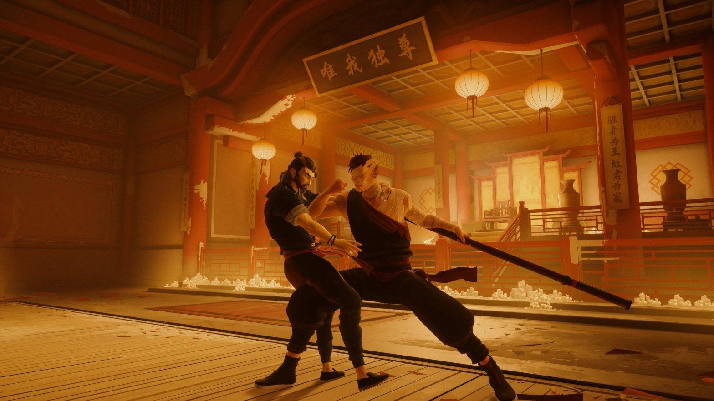

Nivel 1: La Caída del Dojo
Resumen del Nivel
La obra abre en la atmósfera sagrada de un dojo de Kung-Fu. El Maestro (50s), una figura de inmensa autoridad, entrena a su joven hijo, Jaky (10), junto a otros alumnos. La paz se rompe cuando un destello de ira revela la naturaleza volátil del Maestro, quien culpa cruelmente a Jaky por la ausencia de su madre. El golpe es brutal, pero es seguido por un arrepentimiento inmediato y torpe, dejando una cicatriz emocional en el niño mientras el entrenamiento se reanuda.
En el exterior, la noche es interrumpida por la llegada de cuatro figuras enigmáticas. Su líder, armado con un bō, da una orden lacónica: "Esta noche termina". El grupo se dispersa e inicia un asalto coordinado y silencioso. El líder irrumpe, despachando a los guardias con una eficiencia letal. La escena se fragmenta en una serie de "pisos" o estancias del complejo (una cocina, un dormitorio), donde los otros asaltantes ya han completado su masacre, cada uno con un estilo propio y macabro.
La confrontación culmina en el dojo principal. En un momento de calma premonitoria, el Maestro le entrega a Jaky un antiguo talismán con cinco colgantes, haciéndole jurar que lo llevará siempre y que vengará su muerte. Jaky huye justo cuando los cuatro asesinos acorralan al Maestro. Una chispa de reconocimiento en los ojos del padre es lo último que vemos antes de que un apagón sumerja el escenario en oscuridad, y los sonidos brutales de una lucha desigual sellen su destino.
La luz final, de un rojo intenso, ilumina a Jaky, solo y llorando. Aferrado al talismán, su dolor se transforma en un juramento de venganza. Inicia un montaje de teatro físico: una década de entrenamiento implacable condensada en minutos, donde vemos a Jaky pasar de niño a un joven de 20 años, un arma viviente forjada por el odio. La obra estalla con su título en las pantallas: ZIFU.
Puntos de Giro Clave
- La Herida Psicológica: El arrebato del padre es la semilla de la duda que atormentará a Jaky en el futuro.
- El Juramento y el Talismán: El Maestro le da el talismán a Jaky, iniciando la misión de venganza.
- La Transformación: El montaje final muestra la muerte de la infancia de Jaky y el nacimiento de su identidad como vengador.
Propuesta de Escenografía
- Minimalismo brutalista con inspiración asiática. Estructura de 3 niveles iluminada progresivamente.
- Transiciones instantáneas entre "pisos" con grúa/elevador e iluminación.
- Materiales: madera oscura, paneles de hormigón, pantallas shoji translúcidas.
- Modularidad para gira: secciones ensamblables, cicloramas o pantallas LED con texturas sutiles.

Propuesta de Vestuario
- Jaky: gi de niño, versiones más grandes y desgastadas durante el montaje.
- El Maestro: gi de seda o lino, tonos marfil o gris oscuro.
- Asesinos: ropa urbana y táctica, detalles asiáticos, cada uno con un distintivo.
Diseño de Iluminación y Sonido
- Iluminación: paleta simbólica, luz ámbar, azul, verde y roja según la escena.
- Sonido: guzheng, pipa, NIN, atmósferas tensas y coreografía sonora de la lucha.
Notas de Dirección
- El ritmo debe ser meditativo al inicio y brutal en el asalto.
- Coreografía de asesinos: precisión inhumana, movimiento como lenguaje.
- Actor de Jaky: capacidad física extraordinaria, foco en transformación y agotamiento.
- Relación padre-hijo: amor y resentimiento coexistiendo en poco tiempo.
Conexión con el Pitch Deck
- Alto potencial espectacular: coreografías de artes marciales de primer nivel.
- Universo estético único: lenguaje visual y sonoro sofisticado.
- Profundidad emocional: protagonista complejo y estructura trágica.
- Ritmo cinematográfico: estructura de "pisos" y transiciones rápidas.